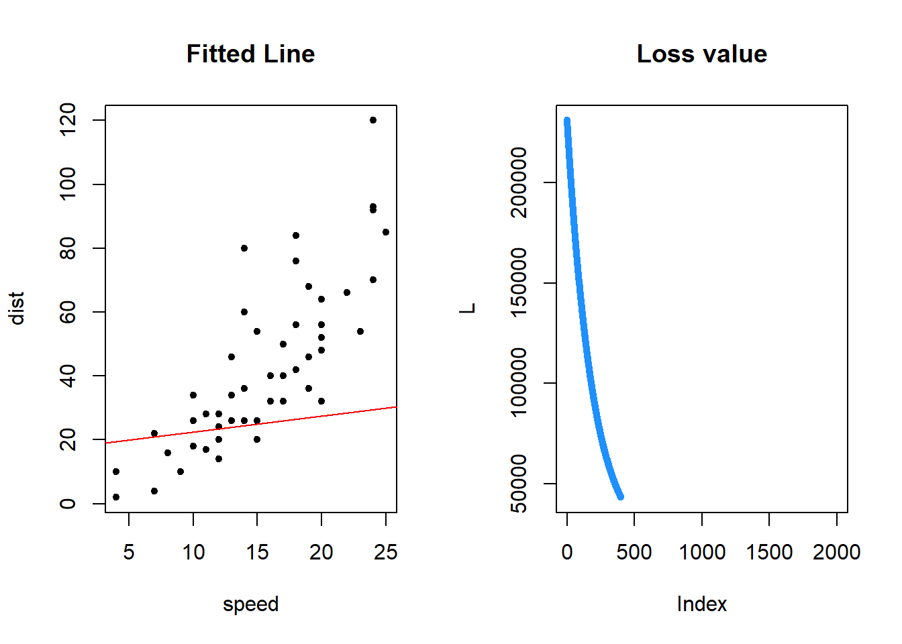
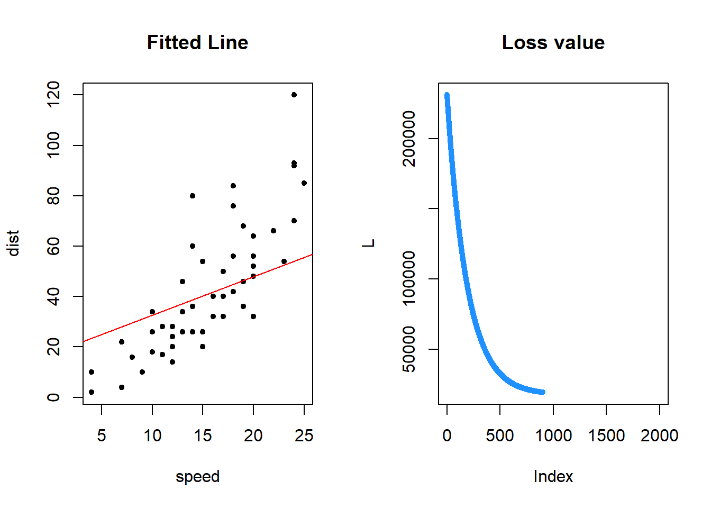
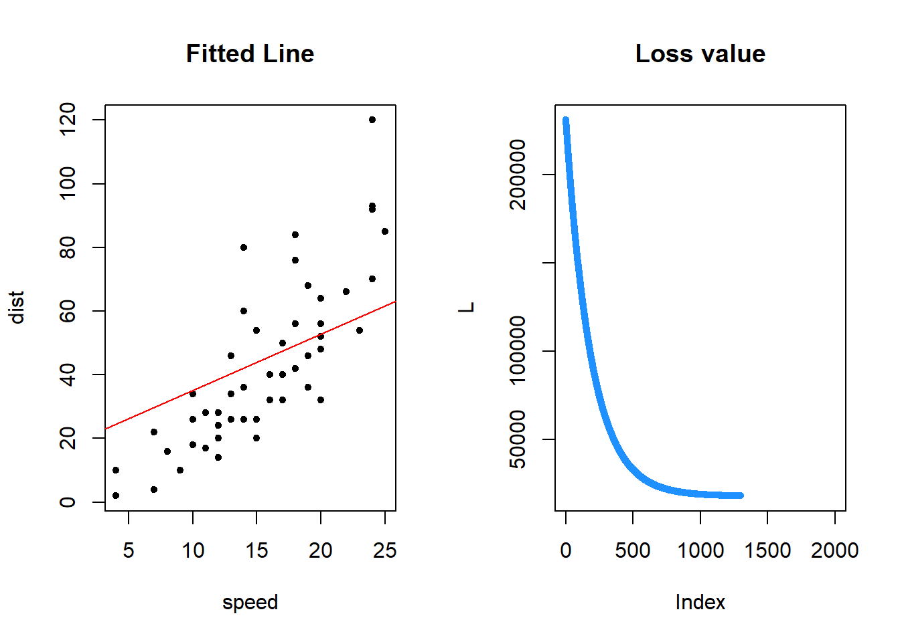

The following objects are masked from 'package:tidyr':
expand, pack, unpack
Loaded glmnet 4.1-6
library(caret)
Loading required package: ggplot2
Loading required package: lattice
Attaching package: 'caret'
The following object is masked from 'package:purrr':
lift
library(car)
Loading required package: carData
Attaching package: 'car'
The following object is masked from 'package:purrr':
some
The following object is masked from 'package:dplyr':
recode
df <- Bostonattach(Boston)
February 21st
Regularization/Shrinkage estimators
Objective function defined below: \[
y = \beta_0 + \beta_1 x_1 + \beta_2 x_2 + ... + \beta_p x_p + \epsilon
\]
The least-squares objective selects the model with the smallest residual standard error \[
L(\beta_0, \beta_2, \dots, \beta_p) = SS_{Res} = \sum_{i=1}^n (y_i - \beta_0 - \beta_1 x_{1,i} - \dots - \beta_p x_{p,i})^2
\]
The solution to this problem is denoted as follows… \[
(b_1, b_2, \dots, b_p) = \mathop{\arg\min}\limits_{\beta_1 \dots \beta_p} L(\beta_0, \beta_1, \dots, \beta_p)
\] * Don’t always want every variable from a data set in our final model
To select only a subset of these variables in our final model, we can include a penalty term (include penalty term that doesn’t have the intercept)
Below is the penalty term
\[
p_\lambda(\beta_1, \dots, \beta_p)
\] * This penalty term favors solutions which select smaller subset of the variables (sparser solutions),as some variables may not be ‘important’ to the final model.
When we include the penalty term, the objective function becomes…
General case in glmnet() \[
p_\lambda = |\beta_1|^\alpha + |\beta_2|^\alpha + \dots + |\beta_p|^\alpha
\]
In the case of each penalty term, we can see that we want to find a solution which:
Minimizes \(SS_{Res}\), and
Minimizes \(p_\lambda\), which means that we want to find a solution which favors sparser solutions
How the penalty term impacts the objective function:
After implementing the penalty function if any of the \(\beta_p\) turns out to be 0, it means that it doesn’t have an impact on the model as you are multiplying the variable by 0 so it won’t be included (for a change in that \(\x_p\), there is no change in the model) –> the variables associated with the zeroes are then dropped from the final model
The variables that are co-linear are shrunk to 0, therefore eliminating those variables from the final model (deems that variable not important)
LASSO
Unlike lm(), the glmnet() function doesn’t take in a formula
To use LASSO we can first rescale the variables so they are all on same scale
lasso_coef <-coef(lasso, s ="lambda.min")# can do lambda.1se to choose different lambda that will result in different# amount of variables chosenselected_vars <-rownames(lasso_coef)[which(abs(lasso_coef) >0)][-1] # excludes the intercept termlasso_coef
13 x 1 sparse Matrix of class "dgCMatrix"
s1
(Intercept) 22.3364884
crim -0.9688951
zn 0.9870774
indus .
chas 2.8381966
nox -2.0050666
rm 2.6234811
age .
dis -3.0114566
rad 2.1167266
tax -1.7792433
ptratio -1.9847999
lstat -3.8973227
In the lasso model, in order to select an appropriate model, need to create model, looking at mean square error and choosing lambda value that is appropriate
Variable selection has finite (set) amount of steps
lasso is more efficient for data sets with TONS of variables
Gradient descent
Used for solving one of the penalized estimators problems
General recipe for fitting models
Derivative is telling us slope (for small change in x, what is change in y)
If you end up with a minimum point, the derivative will be flat (slope = 0, no change in y for change in x)
A minimizer is characterized by 2 points
derivative has slope of 0
the 2nd derivative has to be positive
To do gradient descent, compute derivative with respect to every parameter (partial derivative)
Recall that the solution to a regression problem is given by
where \(L(\beta_0, \beta_2, \dots, \beta_p)\) is referred to as the loss function. If we want to find the values of \((\beta_0, \beta_2, \dots, \beta_p)\) which minimize \(L()\), then using the general principle from calculus, we are interested in looking for values such that the partial derivative with respect to each \(\beta\) is 0.
In the case of linear regression, the derivatives can be computed by hand, and there exists a closed form solution to the above system of equations
However, in many other models, we don’t have a method for obtaining closed form solutions. In such cases, the general strategy is as follows:
Compute gradient
Choose a step size \(\eta\) between (0,1)
Start off at some randomized initialized value and at every step, choose a step size between 0 and 1
Perform gradient descent
Take one step in direction of negative gradient(direction that leads to decrease in the objective function, L)
Repeat those steps until you reach some sort of stable minimum (when change of L is not significant to continue)
This is how lasso problem is being solved
attach(cars)
Creating a loss function that calculates mean squared error
steps <-1000L <-rep(Inf, steps)eta <-1e-7b <-10*rnorm(2)for (i in1:steps){ b <- b - eta *grad(b, Loss, cars$speed, cars$dist) L[i] <-Loss(b, cars$speed, cars$dist)}
Creates a plot that shows the loss value for each index compared to the fitted line for the variables we plotted
options(repr.plot.width=12, repr.plot.height=7)par(mfrow=c(1,2))# Plot the final resultplot(dist ~ speed, cars, pch=20, main ="Fitted Line")abline(b, col ='red')# Plot the change in loss function valueplot(L, type ='b', pch=20, col='dodgerblue', main='Loss value')
This next code chunk breaks down the loss function into various parts so you can see how the loss function progress at given indexes, along with the associated fitted line for the distance and speed plot
options(repr.plot.width=12, repr.plot.height=7)steps <-2000L <-rep(Inf, steps)eta <-1e-7b <-10*rnorm(2)for (i in1:steps){ b <- b - eta *grad(b, Loss, cars$speed, cars$dist) L[i] <-Loss(b, cars$speed, cars$dist)if (i %%100==0){par(mfrow=c(1,2))# Plot the final resultplot(dist ~ speed, cars, pch=20, main ="Fitted Line")abline(b, col ='red')# Plot the change in loss function valueplot(L, type ='b', pch=20, col='dodgerblue', main='Loss value') }}



Thursday, Feb 23
TIL
Include a very brief summary of what you learnt in this class here.